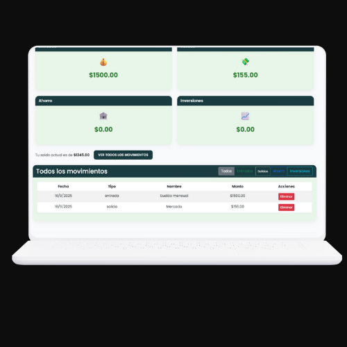

Login
Acceso seguro con autenticación de usuarios, opción de registro y recuperación de contraseña.
Registro
Permite crear una cuenta introduciendo nombre, correo y contraseña de manera sencilla.
Dashboard
Resumen visual con totales, saldo disponible y estadísticas de ingresos, gastos, ahorro e inversiones.
Gestión de movimientos
Registrar, editar o eliminar movimientos clasificados en categorías con actualizaciones dinámicas.

Movimientos
Visualización de todos los movimientos financieros con opciones de filtrado tipo de transacción.

Eliminar movimiento
Permite al usuario eliminar un movimiento financiero específico con confirmación de seguridad para evitar errores.